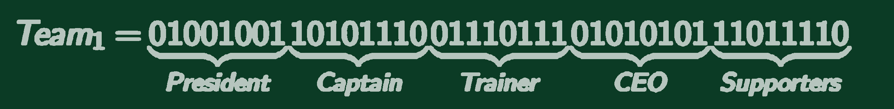
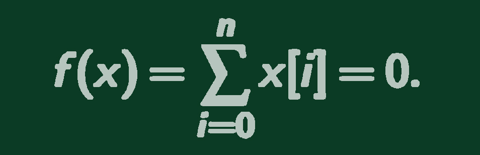

This website displays our project for the course Arguing Agents.
Our project tries to mimic a transfermarket for soccer teams.
This project basically consists of two parts: argumentation within a team and
argumentation between teams.
Argumentation within a team
The argumentation within a team is based on the dialogue type 'Negotiation' of Walton & Krabbe (1995).
The agents start from a situation in which a conflict of interest exists and want to reach a dialogue goal that corresponds in making a deal.
Jennings et al. (2001) state the following:
"Negotiation is a distributed search in which multiple agents transfer knowledge in a hypothetical space of potential agreements" (See figure below)
All the agents (Ai) start with their own region of acceptibility (dotted line). During negotiation the agents make offers (previous: X and current: O)
which are rejected by the other agents or accepted. In the last case the acceptability space is modificated. This process is repeated recursively, until
an overlap between two acceptability spaces is reached, which means an agreement is achieved.
The argumentation model based on negotiation makes use of a bio-computing approach. The agents (President, Captain, Trainer, CEO, Supporters) are represented as chromosomes,
a sequence of binary bits, which looks like this: 
A 0 corresponds to an amount of agreement and a 1 to an amount of disagreement. To minimize the level of disagreement within a team, a genetic algorithm is used.
The level of agreement is measured by the following fitness function: 
This equations sums over the total length of the chromosomes n and aims to find a set of solutions with a result of 0, which corresponds to the optimal agreement.
Once a set of solutions is evaluated by the fitness function the algorithm keeps the fittest ones and creates new possible solutions that will recursively
be evaluated until the fitness function is satisfied.
We have tested 3 different types of Agents that differ between each other according to the way they share the information bits and we have investigated the performance of
the genetic algorithm:
Jennings, N.R., Faratin, P., Lomuscio, A.R., Parsons, S., Wooldridge, M.J. & Sierra, C. (2001). Automated negotiation: prospects, methods and challenges. Group Decision and Negotiation, 10(2):199-215.
Walton, D. & Krabbe, E.C.W. (1995). Commitment in dialogue.
Argumentation between teams
Argumentation between teams is done using an informal model. This model works as follows.
First the amount of teams that will participate in the negotiation must be chosen, ranging from 2 to 5 teams.
Every team has 15 players, each with three attributes:
Next to these players, each team also has a budget and a president. These both influence the buying or selling process. There are 6 actions a team can perform:
When a team bids on player, there are three strategies: get the best, a random or the worst player.
When a team rejects a bid from another team, there can be several reasons for that. Also the involvement of
the President can cause a team to bid or reject, including different reasons.
The simulations of the transfermarket works in rounds. A round includes the following process:
Next to the teams there is also a transfer list. This list is an agent without buying skills, but it can sell players. This is how the simulation works so far, but there are some future improvements: More actions could be added to get more argumentation, for example a counter-bid. To make the simulation more realistic more strategies for the teams could be added. Furthermore, the budget of a team could be raised by selling a player to the transfer list.
Let me see the argumentation!